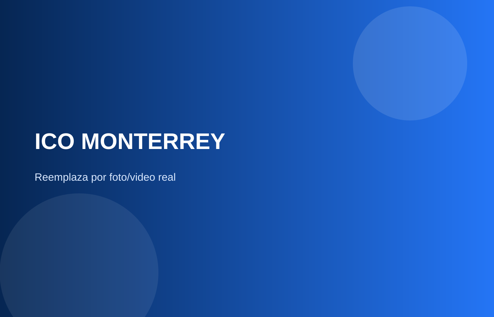
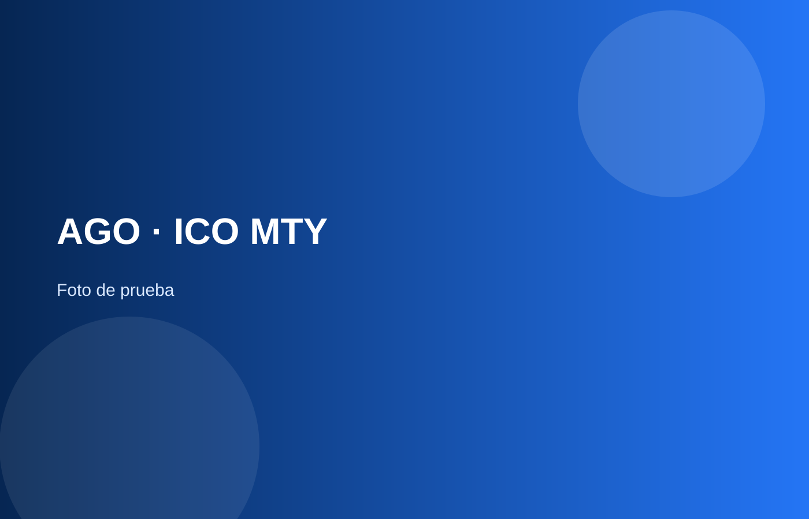
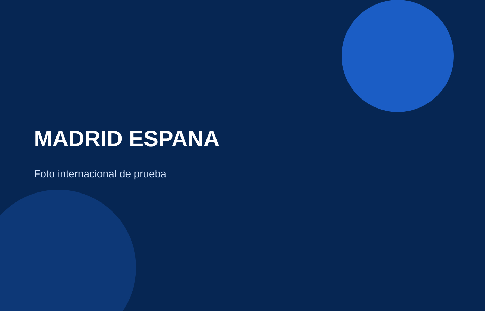
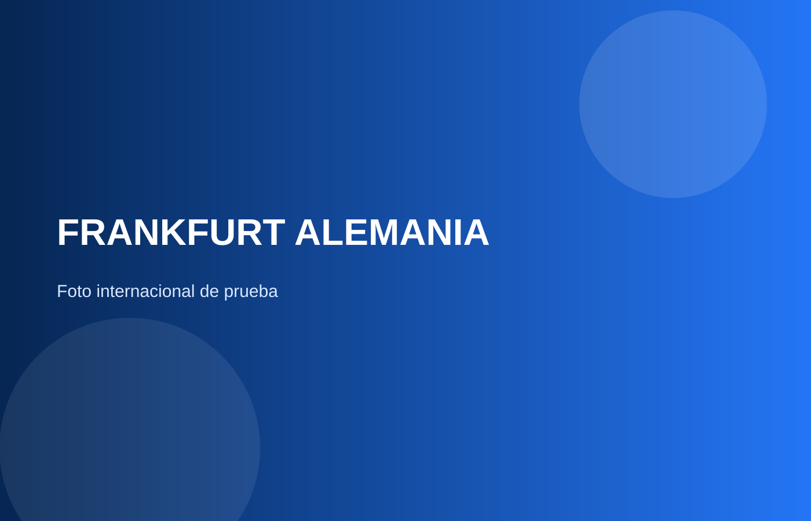
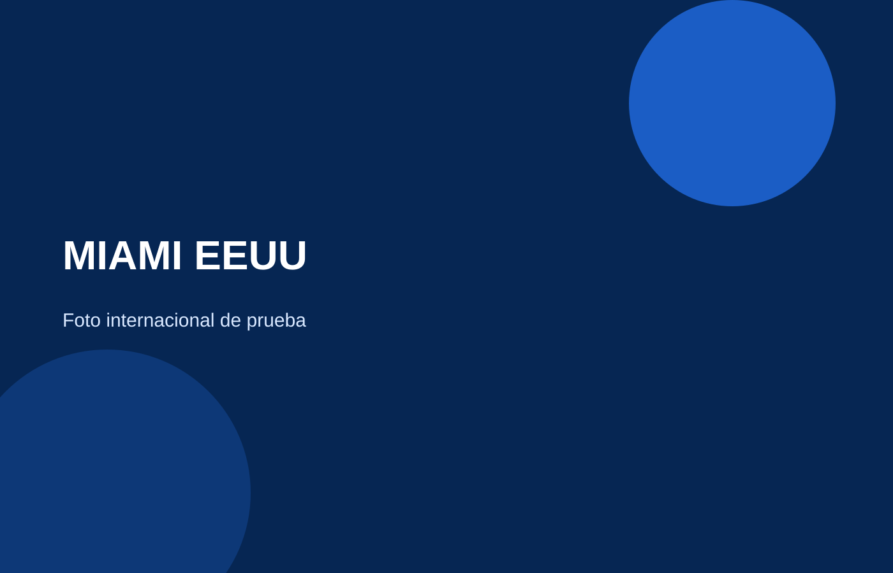
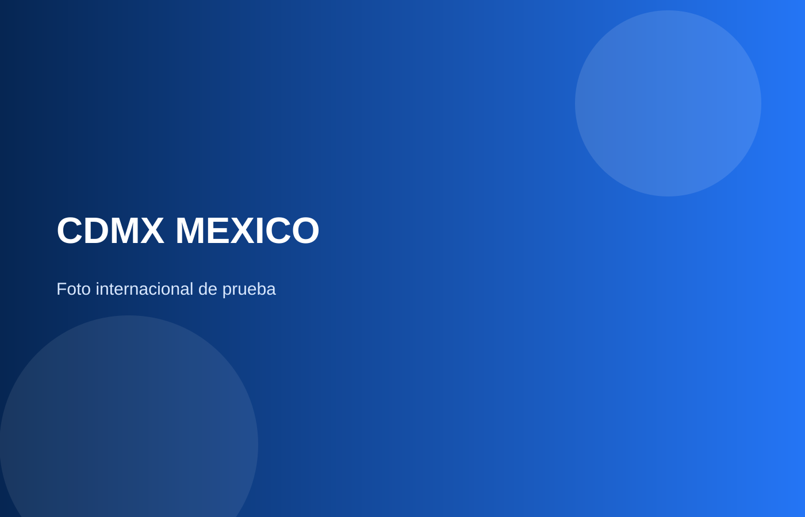
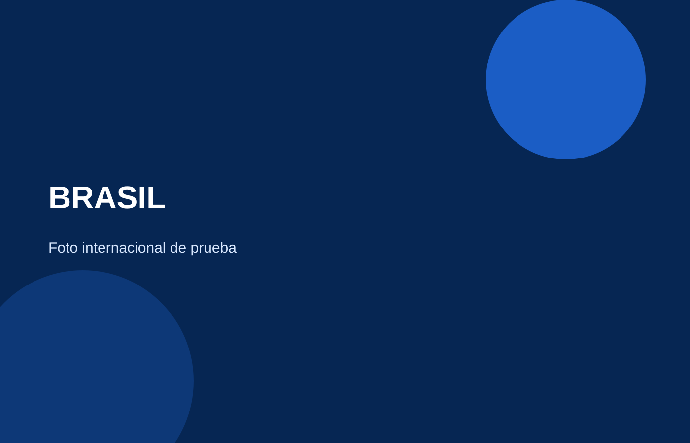
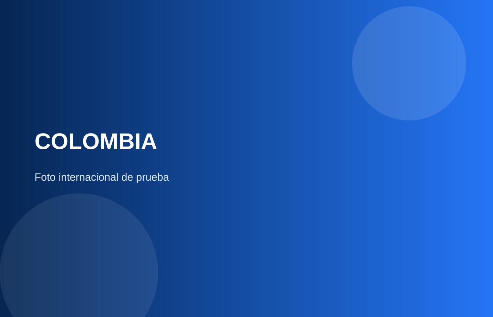

Conversación, escucha, improvisación, persuasión, storytelling, debate, lenguaje corporal y más.
ICO MONTERREY
Entrena tu comunicación en el mundo real.
Eventos presenciales en Monterrey donde vienes a practicar, conectar, incomodarte un poco y desarrollar la confianza para comunicarte con cualquier persona.
No vienes a escuchar una clase. Vienes a vivirlo.
QUIERO IR AL PRÓXIMO EVENTO →Una comunidad para practicar comunicación en el mundo real.
Los eventos de ICO Monterrey son encuentros presenciales donde ponemos en práctica habilidades de comunicación a través de retos, dinámicas y experiencias reales. No importa tu edad ni si te consideras una persona muy social: el objetivo es comunicarnos mejor con otras personas.
Te enfrentas de forma progresiva a situaciones que normalmente podrías evitar. Entender algo no sustituye practicarlo.
Conoces personas diferentes, generas conexiones y compartes la experiencia con gente que también quiere mejorar.
Parte del Instituto de Comunicación
ICO es una comunidad internacional fundada en España por Adrià Solà Pastor, enfocada en desarrollar una de las habilidades más importantes de este siglo: la comunicación.
🇪🇸 Fundada en España · 🏅 Calidad educativa certificada a nivel europeo
Conoce más sobre ICO →No sabes exactamente qué va a pasar.
Ese es parte del punto.
Llegas quizá sin conocer a nadie.
Cinco minutos después ya estás hablando con alguien nuevo.
Te ponemos un reto.
Te da un poco de pena.
Lo haces de todas formas.
Te ríes. Fallas. Vuelves a intentar.

No vienes a demostrar qué tan bueno eres comunicando.
Vienes a descubrir de qué eres capaz cuando te atreves a practicarlo.
La comunicación no es una sola habilidad.
ConversaciónHablar en públicoImprovisaciónPersuasiónStorytellingLenguaje no verbal
Un evento puede llevarte a debatir bajo presión. Otro a hablar con desconocidos. Otro a contar historias, improvisar o persuadir. La idea es entrenar diferentes partes de tu comunicación, no repetir siempre lo mismo.


ICO Monterrey, mes tras mes.
Mes tras mes nos reunimos para practicar comunicación, conocer personas y enfrentarnos a retos diferentes.
8EVENTOS REALIZADOS
≈60ASISTENCIAS ACUMULADAS

Y esto apenas empieza.
Una comunidad. Distintas ciudades.
La misma intención: comunicar mejor.
🇲🇽 🇪🇸 🇨🇷 🇪🇨 🇵🇪 🇧🇷 🇨🇴 🇻🇪 🇦🇷 🇺🇸 🇩🇪






Monterrey forma parte de una comunidad que ha cruzado ciudades, países y culturas.
PRÓXIMO EVENTO · MONTERREY
¿Te animas a vivirlo?
26 DE SEPTIEMBRE
🕔 5:00 PM – 8:00 PM
📍 Parque El Capitán
Tres horas para salir de la rutina, conocer personas nuevas y poner a prueba tu comunicación a través de retos y experiencias prácticas.
No necesitas experiencia previa ni ser una persona extrovertida. Solo venir dispuesto a participar.
👀 Las dinámicas cambian en cada evento.
Lo que pase esta vez, lo descubrirás ahí.
Lo que pase esta vez, lo descubrirás ahí.
Preguntas frecuentes
¿Y si me da pena?
Ese es el punto. No tienes que esperar a dejar de sentir nervios para atreverte. La confianza se construye practicando, haciendo cosas que normalmente evitarías y descubriendo que eres capaz de mucho más de lo que pensabas. Ahí es donde empieza el crecimiento.
¿Puedo ir solo?
Claro. Muchas personas llegan sin conocer a nadie. Las dinámicas están diseñadas para que poco a poco conozcas, hables y conectes con los demás.
¿Tengo que ser extrovertido?
No. No necesitas experiencia previa ni considerarte una persona muy social. Precisamente vienes a practicar.
¿Y si no soy bueno socializando?
No es una competencia ni tienes que demostrarle nada a nadie. Vienes a practicar, equivocarte, intentar cosas nuevas y mejorar poco a poco.
¿Puedo llevar amigos?
¡Claro! De hecho, es muy recomendado venir acompañado. Solo asegúrate de que cada persona se registre.
¿Tiene costo?
No. El evento es completamente gratuito. Solo necesitas registrarte para confirmar tu lugar.
¿Cuánto dura?
Aproximadamente 3 horas, de 5:00 PM a 8:00 PM.
¿Qué tengo que llevar?
Ropa cómoda, agua y disposición para participar. Nosotros nos encargamos del resto.